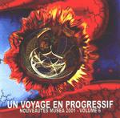

| Artist: | Various Artists |
| Title: | Un Voyage En Progressif Volume 6 |
| Label: | Musea FGBG 4403.AR |
| Length(s): | 76 minutes |
| Year(s) of release: | 2001 |
| Month of review: | [01/2001] |
| 1) | Halloween (Fra) - Scheherazade | 10.21 |
| 2) | Prority (Jap) - Yellow | 4.52 |
| 3) | Kvazar (Nor) - Ballet | 9.18 |
| 4) | Priam (France) - Sensitivis (Chrysalis Square) | 10.30 |
| 5) | Cliffhanger (Net) - Autumn | 7.18 |
| 6) | Taal (Fra) - Coornibus | 8.38 |
| 7) | Vital Duo (Fra) - La Tour Haute (sauver Les Hommes) | 7.02 |
| 8) | Ars Nova (Jap) - Succubus | 5.33 |
| 9) | Ezra Winston (It) - Night-storm | 6.02 |
| 10) | XII Alfonso (Fra) - Croisade Pour Olympia | 6.50 |
Second up is the Japanese Prority, unknown to me. This is a near instrumental track, containing just some atmospheric mumbling in the background. The track moves along nicely, with some soft jazzy moves interspersed. It's more or less over before it has started. Not bad, but not good either.
Kvazar presents a somewhat more dark track. During the initial instrumental parts I'm sometimes reminded of Anekdoten, especially their early stuff. Kvazar is unable to live up to that promise, but Ballet definitely stands up in its own right. Especially after some more listens. This band definitely shows promise.
Sensitivis starts off with keyboards and a sound that associate with words such as glowing and pulsing. After several minutes the tracks moves into a more guitar oriented vein, with the keyboards laying just a basis. The latter stages of this track also see some breaks, that sound to me like Priam get lost in the difficulty of the rhythm they have created for themselves.
When hearing this track without really being aware what it was, I thought they were an Italian band, both because of the sound of the music, as the vocals. This track reminds me of the Italian bands that make progressive music in a Genesis vein, if you catch my drift (like The (Night)Watch). The track is pretty good, but lacks in originality a bit.
Taal starts off with some medieval sounding flutes, joined by some mellow guitarring. Gaining speed the track moves into some pretty technical sounding riffing. Although I don't dislike it, Coornibus seems to be more a vehicle for showing off technical merit, than it is a melodic composition.
Vital Duo was formed by to members of Minimum Vital, who had some extra material which they didn't want to record with the band. La tour haute also is a track that has a certain medieval atmosphere in it, helped along by the use of flute, and what could be a lute. After a couple of minutes some chanting comes, but this also fails to bring the track alife.
Ars Nova's Succubus takes a roaring start, as you would expect it too. Despite somewhat softer moments this clearly is a Ars Nova track: driving keyboards, hard edged basses, and that near constant drive. Pretty good going.
Ezra Winston shows a problem we see more often in progressive music: the vocalist really isn't the best of the singers, aside from clearly not being a native speaker of English. Unfortunately the lazy sounding melody (and I don't mean lazy as in laid back) fails to take away the emphasis from the voice.
Croisade pour Olympia is a laid back track, alternating soloing instruments. The flow is quiet, and not all that interesting.